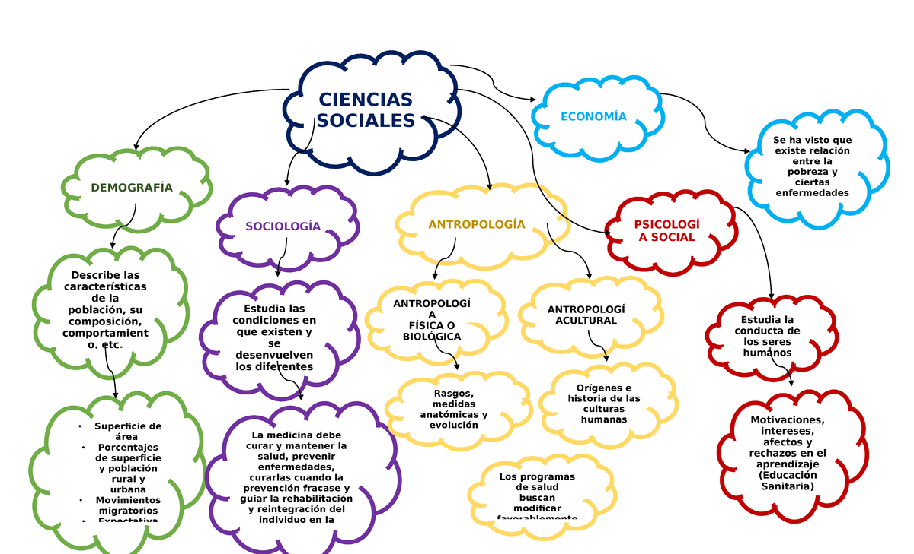

| Las Ciencias Sociales |
|---|
|
Las ciencias sociales estudian el comportamiento humano en sociedad y las estructuras que lo conforman. Se diferencian de las ciencias naturales porque analizan aspectos culturales, económicos, políticos y psicológicos de la vida en comunidad. Estas disciplinas nos permiten comprender cómo interactúan los individuos entre sí y cómo se organizan en diferentes contextos históricos, culturales y geográficos. También ayudan a proponer soluciones para mejorar la convivencia, la justicia social y el desarrollo sostenible. |

| Principales disciplinas de las ciencias sociales: |
|---|
|
- Sociología: Examina la organización y evolución de las sociedades. - Antropología: Estudia las culturas y costumbres humanas, tanto del pasado como del presente. - Economía: Analiza la producción, distribución y consumo de bienes y servicios. - Ciencia política: Investiga los sistemas de gobierno, el poder y la participación ciudadana. - Psicología social: Explora la influencia del entorno social en el comportamiento de las personas. - Historia: Revisa y analiza eventos pasados para comprender el presente y proyectar el futuro. Otras áreas como la geografía humana, la educación, y el derecho también forman parte del campo de estudio de las ciencias sociales. |
| Importancia de las Ciencias Sociales: |
|---|
|
Las ciencias sociales son fundamentales para comprender los problemas del mundo actual, como la desigualdad, los conflictos, el cambio climático, la migración o la educación. Además, fomentan el pensamiento crítico, la participación ciudadana y el respeto por la diversidad cultural y social. |
|
Para saber más: Wikipedia – Ciencias Sociales Concepto.de – Ciencias Sociales |
|---|